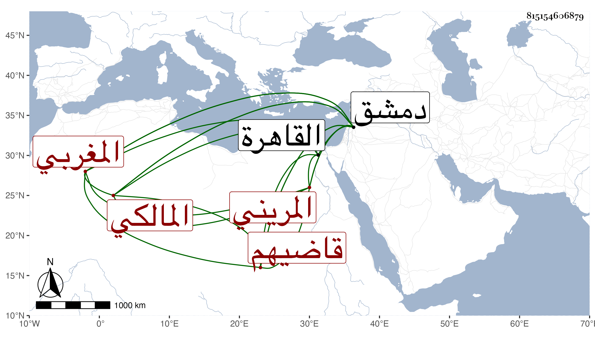

0902Sakhawi.DawLamic.ITO20230111-ara1.EIS1600.815154606879
Biography ID: 815154606879
605
أحمد بن محمد الشهاب المريني بفتح ثم تخفيف المغربي المالكي قاضيهم بدمشق وكان ينوب فيها عن الشهاب التلمساني ثم ابن عبد الوارث ثم استقل بعده واستمر حتى مات ، وكذا كان ممن ناب في نظر اليبمارستان بدمشق عن الجمال الباعوني وفي القضاء بالقاهرة عن قاضيها وجلس بجامع الصالح ، ويذكر بمشاركة في الفقه والعقليات مع سلامة فطرة وعفة بحيث يعتقد مع التثبت إلا في أوقاف المالكية فينسب لتقصير فيها وكأنه لبذله حين يرام عزله . مات في سنة ست وتسعين أو التي بعدها على ما تحرر عن سن عالية وله ابن الله يصلحه .
